Most infiltration models are based on the following empirical (powerlaw) relationship between the flow and the pressure difference across a crack or opening in the building envelope:
|
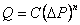 |
(18) |
The volumetric flow rate, Q [m3/s], is a simple function of the pressure drop, DP [Pa], across the opening. A common variation of the powerlaw equation is:
|
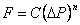 |
(19) |
where the mass flow rate, F [kg/s], is a simple function of the pressure drop. A third variation is related to the orifice equation:
|
|
(20) |
where
Cd= discharge coefficient, and
A= orifice opening area.
Theoretically, the value of the flow exponent should lie between 0.5 and 1.0. Large openings are characterized by values very close to 0.5, while values near 0.65 have been found for small crack-like openings.
The primary advantage of equations (18-20) for describing airflow components is the simple calculation of the partial derivatives for the Newton's method solution of the simultaneous equations:
|
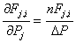 and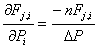 |
(21) |
The sign in equations (21) will agree with the sign of F. However, there is also a problem with equations (21): the derivatives become unbounded as the pressure drop (and the flow) go to zero. A simple way to avoid this problem is suggested by what physically happens at low flow rates: the physical character of the flow (and the form of the equation) changes. It goes from turbulent to laminar. Equations (18-20) can be replaced by

|
(22) |
where
Ck= laminar flow coefficient, and
m= viscosity.
The partial derivatives are simple constants:
|
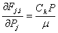 and |
(23) |
The origin of this laminar relationship is shown by the duct equations in the next section. This technique has been independently discovered and used by several researchers [Axley 1987] and [Isaacs 1980]. Although there is physical reason for using equation (22) at low pressure drops, its purpose here is to assure convergence of the equations when DP approaches zero for one of the many flow paths in a complex network, instead of accurately representing airflows which are too small to be of interest. Because the linear flow expression is not used as a true flow model but as a mathematical artifice, it is not necessary to adjust its flow coefficient. Given the uncertainty in estimating the temperature of the air as it flows through an opening, especially a crack, this additional detail is of debatable usefulness.
The CONTAM functions for powerlaw elements calculate flows using both the laminar and the turbulent models and select the method giving the smaller magnitude flow. There is a discontinuity in the derivative of the F(DP) curve where the two equations intersect. This discontinuity is a violation of one of the sufficient conditions for convergence of Newton's method [Conte and de Boor 1972, p. 86]. However, numerical tests conducted by the author for flows at that point using a small airflow network have shown no convergence problem.
It is useful to think of the coefficient C as a simple constant, Ca, evaluated at a particular set of conditions (m0, r0 and n0=m0/r0) multiplied by a correction factor to account for actual air properties. Equations (18-20) are converted to a common form and summarized below with their appropriate temperature correction factors.
|
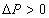 |
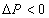 |
Correction Factor | |
|
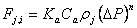 |
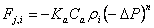 |
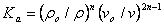 |
|
|
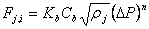 |
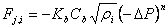 |

|
(24) |
|
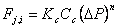 |

|
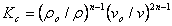 |
CONTAM uses the following formulae for computing r and n:
r = P / (287.055 T)
m = 3.7143´10-6 + 4.9286´10-8T
n = m / r
Using reference conditions of standard atmospheric pressure and 20°C gives ro = 1.2041 kg/m3 and no = 1.5083´10-5 m2/s.
The following procedure outlines the method used by ContamW to calculate laminar flow coefficients at a given transition Reynolds number. For the following equations:
Ftrans = mass airflow rate [kg/s]
A = opening area [m2]
D = hydraulic diameter = 4 A/Perimeter (unless otherwise specified) [m]
viscosity of air, 1.81625 x 10-5 [kg/m·s]
1. Calculate flow rate at transitional Reynolds number. Reynolds number is 30, unless otherwise specified by user input.
Ftrans = Re A / D
2. Calculate pressure difference Ptransat transitional flow rate
a. For airflow element type Q = C(dP)^n
C / 0.6)
D = A
Ptrans = [F/(C 1/n
b. For airflow element type F = C(dP)^n
C / 0.6)
D = A
Ptrans = (F/C)1/n
c. For airflow Orifice, Leaks and Crack element types
C = 2 A Cd
Ptrans= [F/(C 1/n
If (Ptrans < 10-10) then Ptrans = 10-10
3. Calculate laminar flow coefficient from Ptrans
Ck = ( F) / (Ptrans)
Experimental data can be used to determine the coefficients in the orifice form of the powerlaw equation:
|
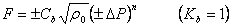 |
(25) |
If n is known or can be assumed, Cb, in equation (24), can be computed from the inverse of equation (25)

|
(26) |
When two points (F1, DP1) and (F2, DP2), are known, n can be computed from:

|
(27) |
with Cb then computed from equation (26).
The powerlaw model can be used with the component leakage area formulation which has been used to characterize openings for infiltration calculations [ASHRAE 2001, p. 25.18]. The leakage area is based on a series of pressurization tests where the airflow rate is measured at a series of pressure differences ranging from about 10 Pa to 75 Pa. The effective leakage area is based on a rearrangement of equation (20)
|
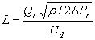 |
(28) |
where
L= equivalent or effective leakage area [m2],
DPr= reference pressure difference [Pa],
Qr= predicted airflow rate at DPr (from curve fit to pressurization test data) [m3/s], and
Cd= discharge coefficient.
There are two common sets of reference conditions:
Cd = 1.0 and DPr = 4 Pa
or
Cd = 0.6 and DPr = 10 Pa.
A leakage area can be converted to the flow coefficient by

|
(29) |
This equation requires a value for n. If it is not reported with the test results, a value between 0.6 and 0.7 is reasonable.
A stairwell will normally be modeled as a vertical series of zones connected by low resistance openings through the floors. The CONTAM model for airflow in stairwells is based on a fit to experimental data [Achakji and Tamura 1988]. They expressed the airflow resistance per floor as an effective area Ae in the orifice equation (20) with a 0.6 discharge coefficient. The effective area is expressed in terms of the area of the shaft AS, the distance between floors h, the density of people on the stairs d, and whether the treads are open or closed. A large number of people on the stairs, as in an evacuation scenario, influences the flow resistance. The experiment used densities of 0, 1, and 2 persons/m2. For open treads the effective area is approximately

|
(30) |
and for closed treads

|
(31) |
The coefficients for the powerlaw equation are

|
(32) |
A relationship for flow through cracks that can be converted directly into a powerlaw airflow element is presented in [Clarke 1985, p. 204] as:

|
(33) |
where

|
(34) |
and

|
(35) |
with
W = crack width (mm), and
a = crack length (m).
Therefore, the coefficients in the powerlaw equation (19) are given by n in equation (34) and
|
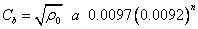 |
(36) |